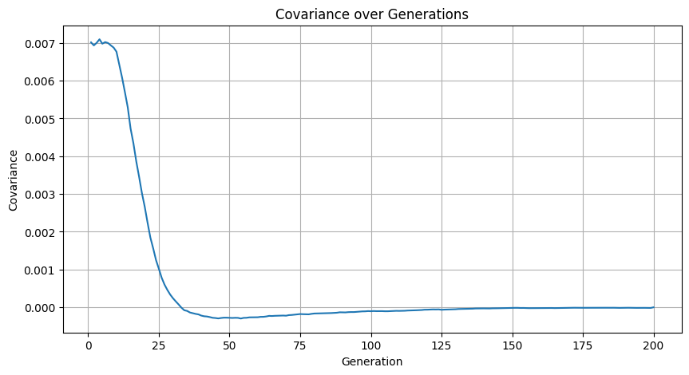
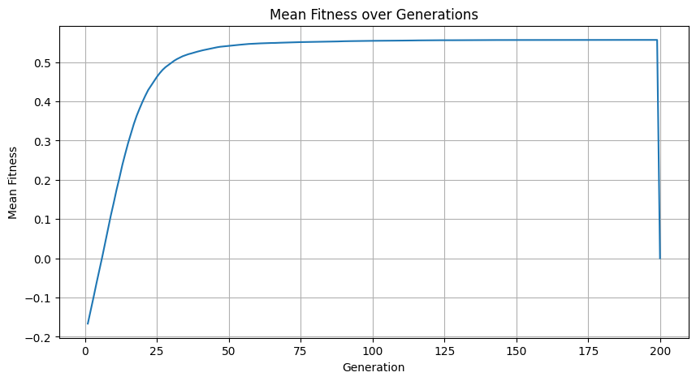

# Here's a Python translation of the Julia code using NumPy, SciPy, and Matplotlib.
# It captures the same logic with array and loop transformations.
import numpy as np
from scipy.stats import multivariate_normal
from numpy.random import default_rng
import matplotlib.pyplot as plt
from tqdm import tqdm
rng = default_rng(seed=1234)
# Simulation parameters
N = int(2.7e4)
reps = 1
gens = 200
dj = 200
m = 1
U = np.exp(-3.0)
# Output containers
cv = [np.zeros(gens + 1) for _ in range(reps)]
mf = [np.zeros(gens + 1) for _ in range(reps)]
mfs = [np.full((gens + 1, gens + 1), np.nan) for _ in range(reps)]
mft = [np.full((gens + 1, gens + 1), np.nan) for _ in range(reps)]
# Bivariate normal distribution
mean = [-0.1, -0.1]
sdx = 0.1
sdy = 0.1
crxy = 0.7
cov = [[sdx**2, sdx * sdy * crxy], [sdx * sdy * crxy, sdy**2]]
dfe = multivariate_normal(mean=mean, cov=cov)
# Simulation
p0 = []
for i in range(reps):
print(f"Starting rep {i+1}")
p = rng.multivariate_normal(mean, cov, size=N)
p0.append(p.copy())
for j in tqdm(range(gens), desc="Simulating generations"):
# if j % 25 == 0:
# print(f"generation {j}")
px = p[:, 0].copy()
py = p[:, 1].copy()
px1 = px.copy()
py1 = py.copy()
fx = lambda t: np.sum(px1 * np.exp(px1 * t)) / np.sum(np.exp(px1 * t))
fy = lambda t: np.sum(py1 * np.exp(py1 * t)) / np.sum(np.exp(py1 * t))
for k in range(j, min(j + dj + 1, gens + 1)):
dt = k - j
mfs[i][j, k] = np.mean(px) + np.mean(py)
if dt == m:
px2 = px.copy()
py2 = py.copy()
fxy = lambda t: np.sum((px2 + py2) * np.exp((px2 + py2) * t)) / np.sum(np.exp((px2 + py2) * t))
if dt <= m:
mft[i][j, k] = fx(dt) + fy(dt)
else:
mft[i][j, k] = fxy(dt - m)
if dt <= m:
wx = np.exp(px)
wy = np.exp(py)
wx /= wx.sum()
wy /= wy.sum()
ngx = rng.choice(N, size=N, p=wx)
ngy = rng.choice(N, size=N, p=wy)
else:
wxy = np.exp(px + py)
wxy /= wxy.sum()
ngxy = rng.choice(N, size=N, p=wxy)
ngx = ngxy
ngy = ngxy
px = px[ngx]
py = py[ngy]
cv[i][j] = np.cov(p[:, 0], p[:, 1])[0, 1]
mf[i][j] = np.mean(p[:, 0] + p[:, 1])
ww = np.exp(p[:, 0] + p[:, 1])
ww /= ww.sum()
next_gen = rng.choice(N, size=N, p=ww)
p = p[next_gen, :]
print("All done")
# Plot
plt.figure(figsize=(10, 5))
plt.plot(np.arange(1, gens + 1), cv[0][1:]) # x has length 500
plt.title("Covariance over Generations")
plt.xlabel("Generation")
plt.ylabel("Covariance")
plt.grid(True)
plt.show()
plt.figure(figsize=(10, 5))
plt.plot(range(1, gens + 1), mf[0][1:])
plt.title("Mean Fitness over Generations")
plt.xlabel("Generation")
plt.ylabel("Mean Fitness")
plt.grid(True)
plt.show()Starting rep 1Simulating generations: 100%|██████████| 200/200 [01:22<00:00, 2.42it/s]All done
